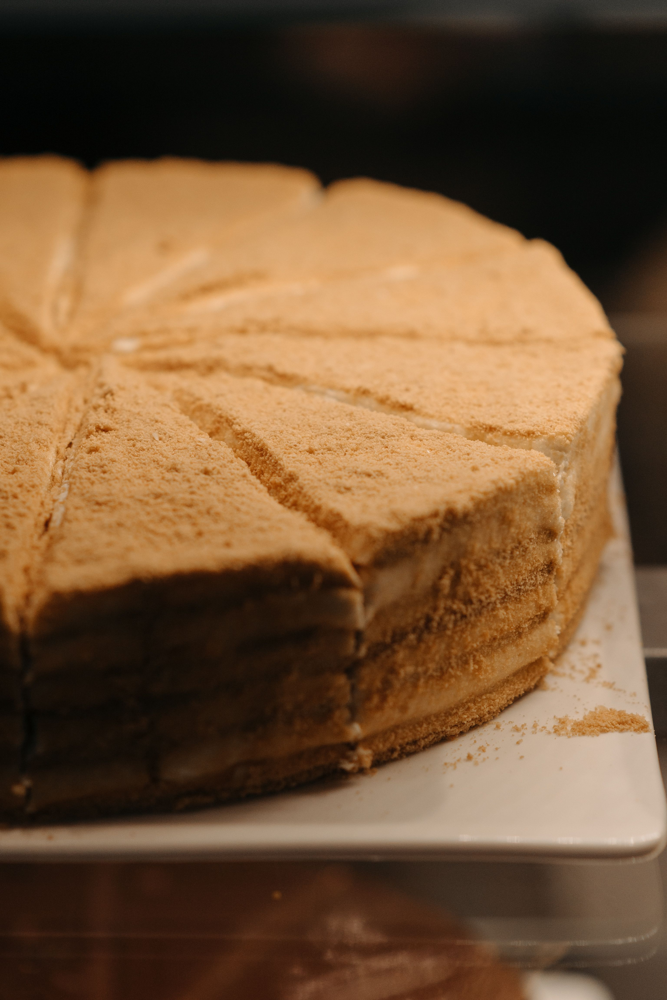

- Medutis -

Image by Pavel Danilyuk, on Pexels.
Description
Medutis is a Lithuanian layered honey cake, famous for its lengthy preparation time. It consists of layers of cake with a cream filling and is often covered with nuts or crumbs made from leftover cake.
Ingredients
For the dough:
- 650g Flour
- 200g Sugar
- 200g Honey
- 2 Eggs
- 100g Butter
- 2 tsp Baking powder
- 1 tsp Cinnamon
- 1 tsp Ground cloves
For the cream:
- 600g Sour Cream
- 400ml cream, 35% fat
- 200g sugar
- 1 lemon (for the juice)
Instructions
- Pour the sugar into a saucepan, add the butter and honey. Heat, stirring constantly, until the mixture becomes smooth and the sugar dissolves. After, let it cool down a little (not completely).
- Pour the beaten eggs into the mixture and mix it well, then add the sifted flour mixed with baking powder and spices and then knead the dough.
- Divide the dough into 5 - 7 pieces, rolling out each piece separately. If the dough sticks to the rolling pin, sprinkle a little flour. The diameter of the sheet should be greater than 24 - 26 centimeters, so that when cutting the already baked sheet, there will be crumbs which can be used to decorate the cake.
- The sheets should be very thin, to account for their growth when baked. Bake the sheets in a 180° C oven for about 3 - 4 minutes, until nicely browned. Trim the edges to the size of your pan, we will use the rest for the crumbs.
- For the cream, whip the sour cream with sugar, add the lemon juice, mix, and gently fold in the whipped cream until stiff.
- Place the sheets in the pan one-by-one with the edges open, spread the cream . Reserve 1 tablespoon of the cream for the top, spread it on top and sprinkle with the remaining crumbs.
- Place the cake in the refrigerator overnight, in the morning remove the sides of the cake and sprinkle them with crumbs or almond flakes.